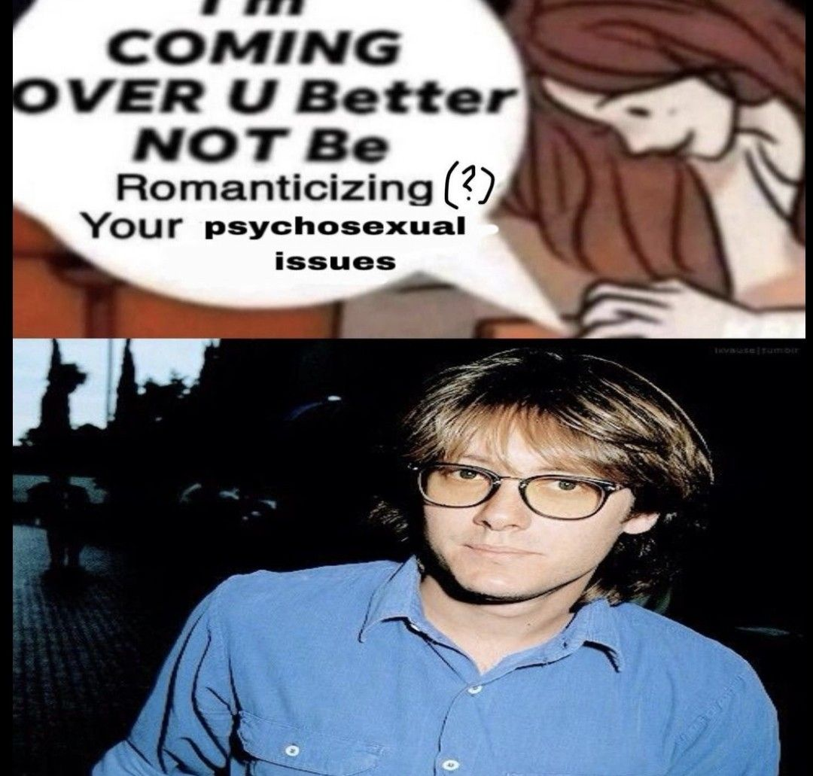

Creo que debería hablar de otra cosa. Estoy leyendo el título y de tantas cosas que puedo hablar, escogí el tópico donde se supone que no me deberían salir más de 50 palabras - ya sea por cualquier carencia de conocimiento, y por la ridícula vergüenza.
Bueno, si te conté lo que he leído en AO3 no debería tener problema con esto, o con nada común, a estas instancias de la vida. Es un tema natural como hablar del clima o discutir sobre política.
*se toma un shot de whisky para intentar aliviar la pena*Iniciando con un comentario extra, por qué no admitir que le tengo envidia a este James Sunderland, al menos en el comienzo de la película. Estúpido infantil, I really would've treated Erika Kohut right.
Me interesó la conversación que tuvimos el martes acerca de los tres puntos que suelen mezclarse pero no son lo mismo: lo romántico, de parejas y películas; lo sexual, en un tono más casual y que suele ser siempre traído a la par con las relaciones románticas; y lo erótico, más... hm... hehmemhejejejje.
Creo que es un tema muy íntimo. No suelo escribir en la pega, sólo pensar del tema. Ayer 13 de agosto estuve pensando del tema que se supone que debo escribir, y estuve pensaaaaaando, ruminando de lo poco que pudimos hablar del tema, destruyéndome el cerebro con mis propias observaciones; al final he llegado a la conclusión de que el tema es ridículamente íntimo y me da algo de vergüenza hablarte de ello sobrio. Tuve que repetir esto, lo siento.
Y también recently, de tanta película que he visto de este hilo, temo que soy heterosexual. I'm trying to restrain my words because I know damn well I won't be writing about these topics the way I usually write. Es como dijiste, en la asexualidad se presenta la mayor objetividad para apreciar y conversar bien sobre estos temas. En cambio en esta pobre alma que conoces la cual no forma parte del 1% de la población, a mitad de estar escribiendo esto voy a terminar raro.
Nuestra diferencia es que verás a James en el baño con Erika y observarás la power dynamic entre los dos, lo cagada de la cabeza que está Erika para herir a una de sus estudiantes sólo para obtener la atención de James, y en el mismo momento hacer que vaya al baño donde está ella para invitarlo a su mundo sexual de forma gradual. Y aprovechar para toquetiarlo un rato. aserle kositas jkekjkrjekerk
Y no sólo esta escena, es toda la peli. Increíble cómo dejan a la vieja tirada nomas y se ponen sin vergüenza alguna a leer la nota en voz alta. Esto es como una mezcla de Crash con Whiplash con Tár. shit's freakyyyyyyyyy
Pero bueno. En cambio, en el otro espectro de observaciones, tienes a Javier. Y yo sólo pienso en cómo me gustaría ahorcar a James para tomar su lugar. Ah, y anoche vi Challengers. Se supone que yo soy el cagado de la cabeza pero irte a ponerte freaky, a espaldas de tu esposo con el cual tienes hijos, con el ex amigo de tu esposo en el cual andan en una lucha love triangle, y van a competir entre los dos tenis el día siguiente... Eso sí debería ser considerado estar cagado de la cabeza, no leerse las 5 obras de James Sunderland/Nurses en AO3 - eso NO es raro.
Después de filosofar al respecto, creo que retiro lo que en nuestra última salida te habría dicho, parafraseado por mi memoria entre las líneas de:
Javier: No sé cómo hacen las personas para sufrir por la necesidad de tener sexo.Bueno. Ahora yo soy el que anda como las personas que había pelado contigo. Esto me recuerda a una imagen/meme que había visto hace un tiempo, de una chica con 23-25 que, por haberse hecho la diferente en épocas jóvenes, no se había maquillado nunca antes y ahora a tal edad tenía que empezar a aprender desde cero todo lo que alguna vez se creyó alguien por encima de tales músicas. O como cualquier rockerx que se hacía hater del reggaetón para terminar teniendo que aprender a perrear a los 25 porque le apareció de repente el gusto por el reggaetón. Bueno, así estoy yo. Cómo chucha lo hicieron. Ahora tengo casi 21 años y no sé cómo la gente tiene una vida sexual activa, iniciarla, no terminar perdiendo la cabeza en el proceso. Creo que me haré el weon mejor y me quedaré viendo películas.
Ahora, tratando de escribir como usualmente lo hago: muy interesante el punto que habíamos tratado. Si se separan como tú lo hiciste, la amatonormatividad se derrumba. Si las amistades pueden hacer lo mismo que las parejas románticas, ¿qué convierte en especial a aquellas parejas que dicen estar enamoradas las unas de las otras? Y más preguntas que no puedo hacerme porque tengo 7 minutos para volver a la pega. Ya basta.
Vayamos a algo que se me hizo divertido, y con esto empieza a derrumbarse la poca dignidad que me quedaba. Con lo que he escrito a lo largo de este día, es suficiente para que me empieces a ver distinto (no creo que de mala manera, pero definitivamente distinto): algo que escribí a las 3 y algo de la mañana con medio ojo abierto, 14 de agosto. Sin editar. BUENO, ESPERA. ESPERA, por favor. Antes de que lo leas. Ignora la imagen. Ehm... Lo que he escrito no es en total seriedad, y estoy seguro de que en las dos primeras líneas del segundo párrafo de texto yo lo escribí de broma. No me siento triste en la ausencia de la actividad que será mencionada en la imagen que presenciarás luego de este párrafo que estás leyendo ahora mismo... Qué horror. Qué fracaso. De tantos temas que había para hablar. Quién mierda me mandó a escribir sobre esto. Pude hablarte sobre las discos. Un top 10 de los mejores pasos de baile para aplicar en un carrete. O decirte que no me dio tiempo. Son las 00:28 del 15 de agosto y estoy escribiendo esto sin saber si te lo voy a compartir. emoji de llorar.
23:53 15 de agosto de 2025. Casi sábado. Estoy releyendo la nota y sueno todavía más patético de lo que recordaba. Daniela, quizá esto deba considerarse igual de vergonzoso que tu cuenta de AO3 o tu cuenta alternativa de Tumblr. Dios sabrá si tienes Twitter. Dios mío.
Así se ve una lluvia de palabras a las casi 4 de la mañana. El último párrafo es cuando lanzo palabras de cosas que se supone que me acordaré en la mañana para escribir y desarrollar más (así como cuando intenté recordar sobre temas que hablarte cuando vimos Before Sunrise), pero lo que puedo recordar es que puse algo como "no seré como un adolescente virgen (...)", y lo de al final "lo barato sale barato" ya sabrá Dios a qué me refería. Me refiero a lo primero porque es un comportamiento desesperado que aprendí de Luis, un examigo del liceo.
(por fin, un fokin vínculo entre dos ideas -> desarrollo, ya puedo desarrollar esta wea con el formato usual. btw gran parte de esto está siendo escrito en la pega, no puedo aguantarme)
Hard to look at this picture, y no colabora en lo absoluto que me agrada mi existencia desde 2023 en adelante, y todo lo demás es una memoria borrosa que detesto. Esta foto es de nuestra fiesta de promoción, fin de nuestros años académicos liceístas. Hay 3 en la foto que ya se habían graduado, estaban acompañándonos - son los que más viejos parecen. Espero que ni me reconozcas, aunque debe ser fácil. Papuchi es el que está más cerca de mí. Parecemos bebés. Y más feos que cagar para adentro. Me veo más feo que el vómito que voy a provocarme a las 22:38 del sábado 16 de agosto de 2025.
Recuerdo que por poco no voy a la fiesta, me avisaron un día antes de la existencia de la misma y que tenía que pagar 15$ para ir o sino no iba - todos pagaron eso, sí, la cuestión es que a mí me avisaron en muy poco tiempo. Ya yo estaba como Arthur en Blackwater en el grupo. 15$ son 15 lucas, lo cual para mí en ese momento era igual una cantidad considerable de dinero, aunque prefiero no hablar de mi pobreza y carencias en tiempos de adolescencia. Qué desgracia. Continuando: la weá malíiiisima, oiga. El DJ mierdero nos vio bailando a todos, fijados en las canciones de su momento - Bad Bunny, yo no sé qué, tal tal; yo disfruto la mayoría de las canciones pero las letras jamás las recuerdo, no importa cuánto las escuche. Y de repente cambia el género. Coloca salsa/bachata. Me sigue dando risa este momento porque me acuerdo que yo estaba en los alrededores del centro donde todos estaban bailando, y repentinamente con el cambio de música todos quedan paralizados, y en sintonía todos se detienen. Se miran los unos a los otros por 3 largos segundos, y se van de la pista. Murió todo. Una fiesta de promoción que empezó como a las 10 de la noche, muerta como a las dos de la mañana, y todos en sus casas a las tres. 15 lucas. Hubiese ahorrado esas lucas para dos copetitos en la Blondie. Aunque ni conocía la Blondie en ese momento. Tampoco conocía al grupo. Tampoco conocía Chile. Mucho menos te conocía a ti. Qué suerte tengo.
Me descarrilé. El tema era Luis. Estábamos todos un día en el salón de clases, y había de todo menos clases - pura parlotera. En una conversación adolescente cualquiera, él había dicho que no se moría sin coger, que hasta con (inserte nombre de compañera de clases que no era atractiva en el estándar Luis) lo haría, pero que no se muere sin coger primero.
A eso me refería con el patecisismo adolescente. Yo «quiero tener sexo» as in quien quiere visitar un lugar divertido, como quien quiere ir a la disco; no de «quiero tener sexo» as in desesperación incel. Y sí, Luis era incel. Y con problemas de ira. Ojalá esté en un mejor momento/lugar, aunque lo dudo. Dios nos ha enviado guerras mundiales para desafiar nuestra fe pero no nos ha enviado una vía al mundo alejado del incelismo y la ultraderecha.
Hablando de Dios, ¿qué queda de religión y la presencia de Él en mis prácticas cotidianas? ¿Qué queda de Él en mí, si vivo tomando, divirtiéndome en lo ilícito, fumando, y no tendría disgusto en tener sexo antes del matrimonio, unión entre dos personas que quizá nunca llegue a ser parte de? Me he estado alejando de la religión, o específicamente de sus prácticas, porque siento que pertenezco más al otro lado, a lo que se supone que es pecado - fornicación y semejantes; sustancias tóxicas (tabaco, alcohol); apoyo la homosexualidad (aunque esto es muy debatido, pero pensemos que igual es prohibido como lo es en el consenso general)... A todo este mundo, soy parte de él y miembro activo. ¿Por ello tendría que abandonar la religión? No, no va de la mano. Quién MIERDA es RODRIGO
Espero no me veas mal por todo esto que converso contigo y conmigo. Es un tema del cual he escrito poco o nada, por lo tanto no puedo decir mucha cosa interesante al respecto, y prefiero mantenerme en la ignorancia antes de usar ChatGPT para hablarte del tema. Prefiero mostrarte lo que no sé. La ignorancia. Lo tonto que soy. Será alguna forma de intimidad contigo.
Me gusta lo erótico, lo sensual. Me gustaría vivir esa intimidad que se tienen en Secretary, pero con mayor conexión humana y no por estar cagados de la cabeza. Aprendí por La Pianiste que confirmo en mi alma y espíritu que me gustaría un día que alguien me controlara, y por Challengers que... me gustaría comerle la mano a alguien, sin usar mis manos, mantenerlas en un cierto lugar, en sumisión.
Una mano presentada a mi boca. Poder comerla libremente, usar mi lengua, mis labios, que demuestre la sed que le tengo a la persona con la que comparta el momento. Me gustarían manos en mi pelo, que me acerquen a donde la voluntad de la otra persona considere que yo sea de uso alguno. Ahí sí me gustaría pertenecer a la clase obrera.
De tantas cosas que pude hablar... Bueno. Más que escribir, te confieso. I'm kind of a theoretical slut. No participo en lo que hablo, pero... pienso en las cosas que te cuento. Se siente raro contarte esto, más que nada por el miedo a que me veas distinto, que sé que me afirmarías que no, pero igual ese miedo persiste. Temo perderte.
Si me cuesta hablar de estas cosas contigo, eso que ya hemos hablado de cualquier tontera, imagínate con otros cercanos. A veces en el trabajo, o la familia, siempre surge ocasionalmente esas preguntas de la vida sexual; si ya tengo polola; que cuándo voy a buscar una mina; que si me gustan los hombres... Siempre las evado. Sólo digo que no estoy interesado, no tengo el tiempo, y ando en otra. Pero la que se lleva medalla de oro es...
Viejo raro. Lo peor es que siempre que lo veo él me dice que lo pase a visitar a su casa, que no tiene mucho que hacer en su casa o no habla con muchas personas fuera de su familia. Tiene una familia, cualquier hija; hombre casado creo yo pero parece que su matrimonio anda ahí nomas; y debe estar en sus 50s.
¿Yo creo que esta historia ya te la habré contado? De ser que ya lo haya hecho, ahora te la explico mejor. Es que estaba comprando plátanos y el hombre justo aparece, y empezamos a hablar. Será con la experiencia que lleva a su edad, pero qué habilidad para pasar una conversación inofensiva a una conversación con tonos sexuales. Elite predator skillset. Como toda conversación, empieza con el cómo estás. De repente hubo una talla natural, graciosa, sabrá Dios de dónde salió, de los chilenos y su rendimiento sexual - todo dentro del marco que te esperarías en una rutina de comedia. Pero ya siguiendo la talla con el tamaño de los chilenos vs. haitianos, y así. ¿Todo normal, creo yo? Hasta que
Y CUÁNTO TE MIDE A TIOhhh, wn. Que no pude verlo venir. Con razón tanto chiste sexual consecutivo. Evadir y decirle que ni idea.
PERO GRANDE, CHIQUITO ??????Ohhh, wn...
« Lo normal, de cualquier persona. »Menos mal de ahí no preguntó más. El tamaño de un pene... cómo tanto falocentrismo...
¿Sabías que según un estudio que encontré por los internets, las mujeres lesbianas reportan una mayor satisfacción sexual que las mujeres hererosexuales? 86% de las lesbianas vs. 65% de las mujeres heterosexuales.
Eso SÍ es un tema interesante del que hablar - no sobre el tamaño de los penes. 86... 65... Son números, chica. De cada 100 mujeres que tienen sexo, 21 mujeres (heterosexuales) quedan insatisfechas. De cada 1000 mujeres, 210 mujeres (heterosexuales) se van a sus casas con depresión. ¿Por qué los hombres se preocuparán tanto del tamaño del pene o de su altura o del looksmaxxxxxxing y no de su inútil y pobre rendimiento sexual? Hay personas en las calles with NO dick and just performing better than them. La sociedad...
En fin. Creo que ya hablamos del erotismo, del sexo también, y ahora falta lo romántico. El romance, el amor... Esas cosas deben existir, me imagino yo. Desde Mistral hacia Doris, desde Mary a Arthur, desde las pelis que muestran a una persona querer a otra hasta el final, el amor...
He tenido una relación larga antes, acompañada de otras conexiones de corto tiempo con personas hacia las cuales sentí amor (como 2-3). Entre más lo pienso, más llego a creer que no he hecho nada que sea estrictamente romántico, que no se pueda realizar en una amistad. Y esto aplica para la mayoría de relaciones en el mundo, la verdad. Lo único que se incluyen en el romance son los "te amo", apodos de amor, y el paquete dos-en-uno que habías mencionado: romance, y sexo. No hay algo que el afecto platónico no pueda cumplir y que el afecto romántico sí. Al final, en el romance y en lo platónico, se llega al mismo final: amar a una persona por su existir fundamental - por lo que es, por cómo es, y amar... y amar...
Me gustaría saber tu opinión. A todo esto, tampoco pude saber tu opinión de la anterior entrada del blog, se me olvidó preguntarte este martes - dijimos que íbamos a hablar de él cuando nos volviéramos a ver y no lo hicimos. Te extraño. Quiero hablar más contigo. Quiero compartir más contigo. Deberíamos comprarnos un cafecito en un lugar y quedarnos hablando todo lo que podamos.
22:51 14 de agosto. Se me acaba de generar en el cerebro un vínculo con Crash y una conversación que tuve - la cual se supone que no es sexual, al menos en intenciones originales, pero...
La cuestión es que una vez estaba charlando con una... ex amiga. Me entristece pensar en las amistades que he perdido y las conexiones que no pude mantener, hacer florecer o siquiera crear por el verano pasado. Eventualmente pasé a responder con unos 3 míseros mensajes cada dos semanas, tres semanas, y en Internet las personas se aburren de eso. Los primeros tres meses de este año para mí dieron demasiado asco. Fue una bonita amistad en el poco tiempo que duró, como unos dos meses. La vida, la pega... Pero ya, que me descarrilo:
Una ex amiga. La cuestión es que estábamos hablando sobre cualquier cosa de la vida y por alguna razón llegamos al tema de que a ella le pegaban de chica, su madre y su padre - y le pegaban tan fuerte como para hacerla dormirse adolorida de una forma que ella consideraba "el mejor sueño de su vida", por alguna razón, como quizá por el descanso mezclado con el dolor, no sé. Familias turcas, wn.
Antes de continuar: ahora que lo pienso, ella tiene cierto parecido a Angela Orosco. Eso había pensado cuando vi a Angela en el cementerio por primera vez pero no tenía a quién comentárselo - ahora lo sabes tú.
La cuestión es que empezamos a jugar con ese tema, el de pegarnos o hacernos daño. Nos daba risa, y entonces siempre hablábamos así. Y estuvimos un buen tiempo con ese tipo de "broma". Quizá una semana entera. Si no me equivoco, porque yo estaba de vacaciones así que estábamos hablando MUCHO por un corto periodo de tiempo, incluso todo el día. Y ya era hábito que estuviéramos con ese tipo de mensajes - hablábamos de cómo nos íbamos a pegar, cómo nos íbamos a hacer daño, etcétera. Pero al final los mensajes no eran taaan de broma, claro ya debe parecer. Cuento corto, plot twist obvio: ambos éramos medio sumisos en el sentido freaky. Ella parece que por ese abuso físico de su infancia, y el mío... Sabrá Dios, wn. Salí así. Y con TEA.
Al final yo le dije que me preocupaba nuestra amistad y que no deberíamos seguir con esos mensajes. Ambos ex amiga y yo somos musulmanes (yo ya no tanto / no practico, pero en ese febrero sí), entonces no hubo nada further than that, sólo aquella tensión extraña que parece sacada de Crash, pero en vez de autos, hablábamos de pegarnos, hacernos sangrar, pegarnos con un bate, o simplemente ejercer fuerza sobre el otro.
I really hope this shit is NOT giving you any literary ideas
Al final, todo es cuestión de ejercer nuestras voluntades y expresión propia - incluso al riesgo de amistades que definitivamente necesitas en tu vida y esperas que no se vayan. Ser auténtico cuando mostramos lo que somos es la única forma de separarnos de la normatividad bastarda que nos ahoga diariamente. Ojalá mis alrededores fueran más divertidos, más raros...
Pensando sobre ésto, debería seguir tus pasos y por lo menos hablarle a un extraño en la Blondie, cargando igual el legado de la mina que encendió mi cigarrillo fuera de mi voluntad. Qué genial es la vida. Qué sabrosa se siente la anticipación. Qué divino es exponer tu garganta sabiendo que el whisky penetrará tus entrañas. Si no me atropellan antes del sábado 16, no únicamente el whisky sino todos los licores posibles, todos ellos serán bienvenidos en mis adentros. No tendré filtro alguno, no voy a temer el barro en el que voy a introducir mis manos para sacar mi placer y alimentar mis vicios. Adoro beber la sangre que no me pertenece, comer la manzana que me prohibieron, arraigarme en donde no me llamaron. invito el lujo dulzor de la danza lujuria del vino y los destilados que llaman la carne sedienta caótica avariciosa encadenante ¿para qué mentirte? soy nada distinto a eva. amo el borgoña amo el carmesí amo la saliva ajena el exceso sobreestimular sentidos el sexo olfato vista tacto olores amo lo carnal amo el cuero el cigarro el sudor cicatrices heridas sangre uñas dientes entierro acepto lo ácido lo dulce lo limpio lo sucio urgido tóxico peligro es todo lo que necesito. castigo y vivo en dominar posesión engendrar en cuerpos ajenos mi voluntad mis manos mis controles mis órdenes ¿para qué mentirte? sed hambre sed licor me quiero envenenar danzar ese prófano baile que no queden cuerpos no queden almas no queden hambres. amo arruinarme en cánticos sádicos olímpicos arrimarme en lo que un día no cruzarme juré con mis labios labia lascivia ninfomania celebran sátiros alaridos cítricos orgamos en latín orgasmos en cirílico palpeos sondeos jadeos gemidos en satín gemidos en burdeo manjar néctar bárbaro gallardo idílico en buena vida poca vergüenza saboreo mis pecados gustoso. cínico, bestial animal pelaje vello cuerpo vulgar sexual aquebrantar lo críptico morbo devoro degollo lo puro inocente mi sed sacio propósito cumplido satisfecho aliento provoco exótico divino de lo jazmín almizcle tulipanes petonias rosas vainilla paraíso. mil vidas divisé; mil vidas símiles el gusto de mi lengua culpable de todo probarán el pecado ornamentado de flores llenas de polen alegrías y soles basiliscos y los más afroditos colores.
y de ponerla ni hablar.
¡nos vemos en unas horas!